dynrmf_sensi.RdThis function computes the sensitivity of a forecasted time series (y)
to small perturbations in an external regressor (xreg) using the dynrmf function.
dynrmf_sensi(y, xreg, h = NULL, level = 99, zero = 1e-04, ...)A univariate time series object to forecast.
A time series of external regressors (same length as y).
Forecast horizon (length of test set). If NULL, uses length of xreg.
Confidence level for dynrmf (default 99).
Small positive constant to avoid division by zero (default 1e-4).
Additional parameters to be passed to ahead::dynrmf
A list containing:
Sensitivity effects on the mean forecast.
Forecast without xreg.
Forecast with xreg.
Forecast with positive perturbation on xreg.
Forecast with negative perturbation on xreg.
Forecast horizon used.
Test set of xreg used in forecasting.
Perturbation applied to xreg.
List with training and testing sets of y.
sensitivity_results_auto <- ahead::dynrmf_sensi(
y = fpp2::uschange[, "Consumption"],
xreg = fpp2::uschange[, "Income"],
h = 10
)
plot1 <- ahead::plot_dynrmf_sensitivity(sensitivity_results_auto,
title = "Sensitivity of Consumption to Income",
y_label = "Effect (ΔConsumption / ΔIncome)")
print(plot1)
#> Warning: conversion failure on 'Effect (ΔConsumption / ΔIncome)' in 'mbcsToSbcs': dot substituted for <ce>
#> Warning: conversion failure on 'Effect (ΔConsumption / ΔIncome)' in 'mbcsToSbcs': dot substituted for <94>
#> Warning: conversion failure on 'Effect (ΔConsumption / ΔIncome)' in 'mbcsToSbcs': dot substituted for <ce>
#> Warning: conversion failure on 'Effect (ΔConsumption / ΔIncome)' in 'mbcsToSbcs': dot substituted for <94>
#> Warning: conversion failure on 'Effect (ΔConsumption / ΔIncome)' in 'mbcsToSbcs': dot substituted for <ce>
#> Warning: conversion failure on 'Effect (ΔConsumption / ΔIncome)' in 'mbcsToSbcs': dot substituted for <94>
#> Warning: conversion failure on 'Effect (ΔConsumption / ΔIncome)' in 'mbcsToSbcs': dot substituted for <ce>
#> Warning: conversion failure on 'Effect (ΔConsumption / ΔIncome)' in 'mbcsToSbcs': dot substituted for <94>
